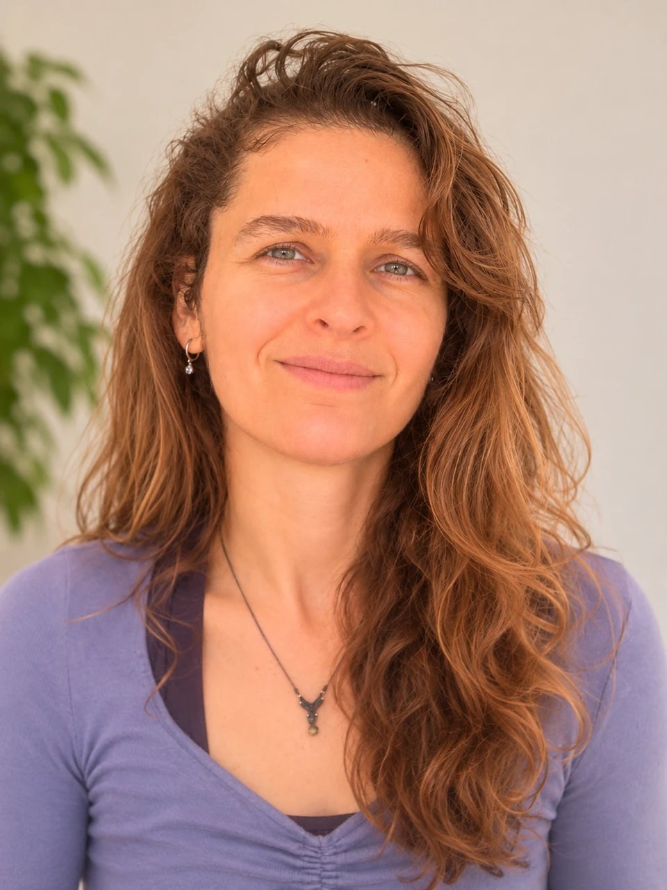

Qui fait quoi ? Le rôle de chaque professionnel
Ostéopathe, orthoptiste, ORL, psychomotricien, ergothérapeute… Une fiche de 4 pages pour savoir vers qui se tourner, et dans quel ordre. Vous la recevez par email.
Recevoir la ficheFanny Dublanchy · Psychomotricienne D.E. · Guidance parentale
Identifier ce qui entretient les difficultés de votre enfant, et savoir par où commencer.
Sommeil, respiration, alimentation, développement, système nerveux : une évaluation globale par une psychomotricienne diplômée d'État, entièrement à distance.
J'entends souvent les mêmes phrases :
Le pédiatre, l'orthophoniste, la psychologue, l'ostéopathe… Chacun apporte un regard précieux sur une partie de la situation. Mon rôle : relier ces éléments, identifier ce qui entretient les difficultés de votre enfant, et vous aider à définir les priorités.
Le parent est au cœur de la démarche : c'est vous qui connaissez le mieux votre enfant, et c'est au quotidien que les choses changent.
Une consultation approfondie en visio, une synthèse écrite de mes recommandations, puis un mois de suivi pour ajuster.
En savoir plus →30 minutes par téléphone pour une question précise, ou un échange supplémentaire pendant ou après un accompagnement.
En savoir plus →Le matin et le goûter, le rôle de chaque professionnel : des fiches concrètes, à recevoir gratuitement.
Voir les fiches →Une approche intégrative : le regard de psychomotricienne, combiné à des connaissances périphériques sur la physiologie du développement, la phytothérapie, la nutrition, le sommeil…
Mon objectif ? Cerner quelle est la priorité pour votre enfant, et de quelle façon vous, parent, pouvez agir pour le soutenir.
Repérage des signes de troubles respiratoires du sommeil (ronflements, respiration buccale, sommeil agité) et de leurs effets sur la journée.
Ventilation nasale, mastication, déglutition : des fonctions qui conditionnent le sommeil, l'alimentation et la croissance du visage.
Qualité des apports, rythme des repas, digestion : des leviers concrets sur l'énergie, l'attention et l'humeur.
Tonus, coordination, traitement sensoriel, attention : le regard clinique de la psychomotricité.
Ce qui maintient l'enfant en état d'alerte, et ce qui l'aide à retrouver son calme, notamment grâce à la co-régulation avec l'adulte.
Votre fatigue, votre charge, vos repères : soutenir le parent, c'est aussi soutenir l'enfant.
Derrière chaque comportement, il y a un besoin.
Une consultation approfondie, pour comprendre ce qui se joue chez votre enfant et définir des priorités claires.
Une question précise ?
Une question précise sur le sommeil, l'alimentation ou le comportement de votre enfant, ou sur le professionnel à consulter ? Vous m'envoyez votre question, nous en parlons 30 minutes par téléphone, et vous recevez ensuite un récapitulatif écrit.
Ce rendez-vous s'adresse aussi aux familles que j'accompagne, ou dont l'accompagnement est terminé, qui ont besoin d'un échange supplémentaire.
Si vous choisissez ensuite la consultation complète dans le mois, le prix de la consultation ciblée est déduit.
Ces consultations sont une guidance et une transmission d'informations pour les parents. Elles ne constituent pas un diagnostic ni un traitement, et ne remplacent pas le suivi par un médecin. Si besoin, je vous oriente vers les professionnels adaptés.
Des fiches pratiques, à recevoir gratuitement par email.
Ostéopathe, orthoptiste, ORL, psychomotricien, ergothérapeute… Une fiche de 4 pages pour savoir vers qui se tourner, et dans quel ordre. Vous la recevez par email.
Recevoir la ficheDes idées de petits-déjeuners et de goûters sains et nutritifs. Vous la recevez par email.
Recevoir la fiche
À propos
Psychomotricienne diplômée d'État (ISRP, 2019), titulaire d'une licence de psychologie, j'ai exercé en EHPAD, en hôpital psychiatrique, en SESSAD, puis trois ans en cabinet libéral, principalement auprès d'enfants présentant un TDAH, des troubles dys, des difficultés émotionnelles ou de comportement.
J'y ai fait un constat qui m'a beaucoup questionnée : même avec un suivi bien mené, certains enfants progressaient peu. Je suis allée chercher plus loin, et je me suis formée à la thérapie myofonctionnelle, à une approche intégrative du TDAH et à la phytothérapie pédiatrique.
Je pars du point de vue que l'enfant est porteur de grands trésors intérieurs. Les difficultés sont souvent l'expression de causes identifiables, sur lesquelles on peut agir plus souvent qu'on ne le pense.
Je suis aussi convaincue que tous les parents font de leur mieux, et qu'ils sont les acteurs principaux de l'accompagnement de leur enfant. C'est pour ça que c'est avec vous que je travaille.
Je ne décide pas à votre place : je vous apporte un regard d'expert, et vous restez celle ou celui qui connaît le mieux son enfant. Ensemble, nous relions les morceaux.
Des infos, vous en trouvez partout. Ce que je vous offre, c'est une présence humaine et une expertise : j'écoute, je croise les savoirs, et je travaille en lien avec les autres professionnels (médecins, ORL, orthophonistes, orthodontistes) lorsque c'est utile. Je suis aussi maman, et je connais le quotidien avec un enfant qui déborde.
Fanny
Une question, une hésitation ? Écrivez-moi, je vous réponds personnellement.
contact@parentacoeur.fr